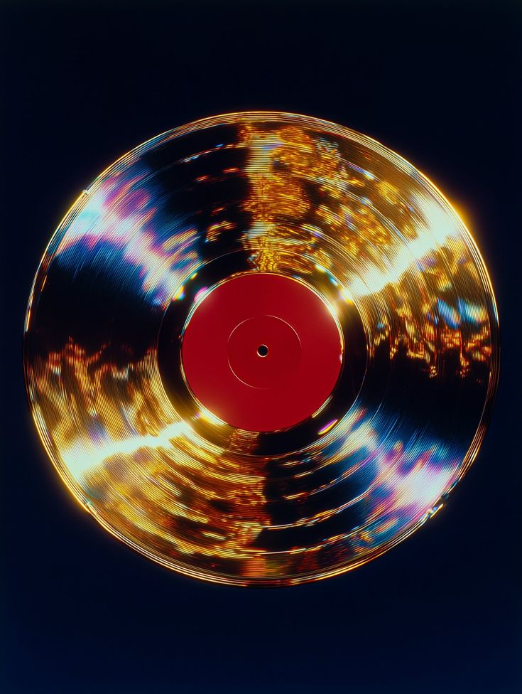

Bienvenidos a este tu blog musical
Este blog esta dedicado 100% a los uevo lanzamientos que salgan en la industria musical semanalmente, tomando en cuneta los gustos de nuestro autor Alfredo en el cual podras encontrar un poco de indie, pop, indie pop, R&B, rap, hiphop, rock, regional mexicano etc.
